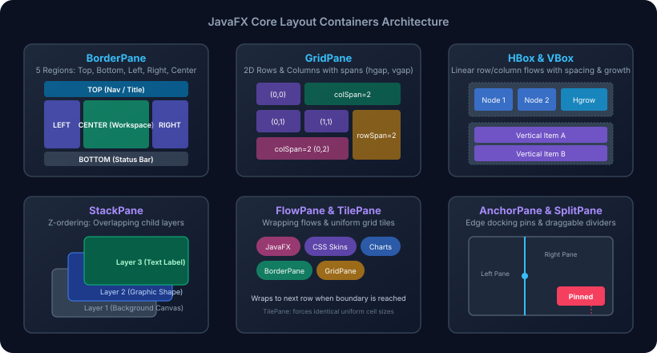
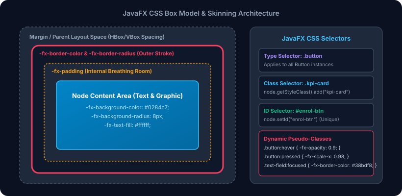
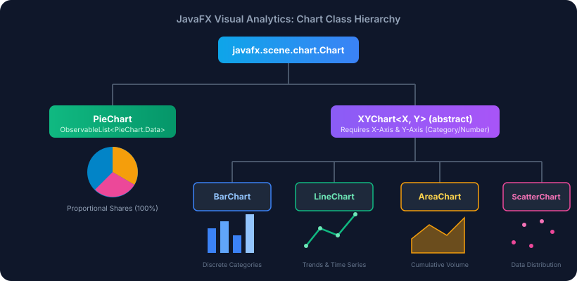

Session 15 — JavaFX Layouts, CSS, Controls & Charts
In Session 14, you learned to draw, transform, and animate custom 2D vector shapes and 3D meshes. Today, you
transition from raw graphic canvases to building sophisticated, production-grade enterprise desktop user interfaces.
You will master JavaFX responsive layout panes (BorderPane, GridPane, HBox,
VBox, FlowPane, TilePane, StackPane, and AnchorPane),
skin applications with corporate styling using the JavaFX CSS box model and -fx-* vendor rules,
bind interactive form controls with reactive property listeners, and render high-impact business intelligence
visualizations using PieChart, BarChart, and LineChart.
- Structure multi-panel corporate application frames using
BorderPane,HBox, andVBoxwith dynamic resizing viaPriority.ALWAYS. - Construct complex 2D data entry forms using
GridPanecoordinates, column spans, row spans, horizontal gaps, and cell alignments. - Select and apply specialized layout containers including
FlowPane(wrapping tags),TilePane(uniform KPI cards),StackPane(Z-order badges), andAnchorPane(docked corner controls). - Style JavaFX components using external
.cssstylesheets, class selectors, pseudo-classes (:hover,:focused), and understand why the-fx-*vendor prefix is mandatory. - Implement rich input forms combining
TextField,ComboBox,RadioButton,ToggleGroup,CheckBox, andDatePicker. - Synchronize reactive ranges and state indicators by binding
Sliderproperties to aProgressBarusingChangeListener. - Plot proportional business distributions using
PieChart, and update slice values dynamically at runtime without rebuilding the chart. - Engineer multi-series comparative trend analytics using
XYChart,CategoryAxis,NumberAxis,BarChart, andLineChart.
Your Roadmap for Today
Why This Matters
In amateur desktop development, developers frequently position UI elements using absolute coordinate pixels:
placing a button at (x = 120, y = 80) and a text field at (x = 240, y = 80).
While this looks acceptable on the developer's specific monitor, absolute positioning completely breaks in
enterprise deployments:
- When a user resizes or maximizes the window, controls remain clustered in the top-left corner, leaving vast empty deserts of grey background.
- When running on high-DPI "Retina" or 4K displays, font scaling causes labels to collide or truncate inside fixed pixel rectangles.
- When translating an application into another language (localization), text lengths expand, causing words to overflow fixed boxes.
JavaFX solves this completely through responsive layout managers (Panes) and CSS skinning. Instead of hardcoding pixels, you declare geometric relationships: "Place this header at the TOP, expand the search field horizontally to consume any extra space, align this form in a 2-column matrix with 14px gutters, and style the entire portal with a dark navy theme." The layout engine continuously calculates optimal sizes and positions on every window resize, ensuring a flawless user experience across all devices and screen resolutions.
- Layout Panes (
Pane) are the structural steel beams, floorplans, and modular partitions.BorderPanedefines the building outline: the penthouse lounge (Top), the lobby (Bottom), the elevator shaft (Left), and the expansive central atrium (Center).GridPanelays out the modular cubicle floorplan with exact rows and columns. - UI Controls (
Control) are the functional furnishings, touchscreens, doors, and appliances: buttons that trigger elevators, text boxes that receive mail, date pickers on the calendar, and sliders that dim the lights. - JavaFX CSS (
.css) is the interior design finish: the polished slate floors, obsidian glass panels, brushed aluminum borders, and ambient neon backlights. You can completely remodel the building from traditional marble to cyberpunk dark mode without knocking down a single structural wall! - Business Charts (
Chart) are the holographic executive status monitors installed in the boardroom: real-time pie charts showing market share and dynamic line graphs plotting quarterly corporate revenue.

Figure 15.1 — JavaFX Core Layout Panes: Visual comparison of 5-region distribution, linear flow, 2D grid matrix, wrapping tiles, and edge docking.
Part 1: JavaFX Layout Panes: BorderPane, HBox & VBox Linear Flow
At the root of almost every enterprise desktop application sits javafx.scene.layout.BorderPane.
BorderPane divides its available screen real estate into five distinct structural zones:
Top, Bottom, Left, Right, and Center.
| Zone | Primary Purpose | Resizing Behavior |
|---|---|---|
Top |
Application menu bars, branding headers, toolbars, search bars | Stretches horizontally to fill window width; maintains preferred height. |
Left |
Navigation drawers, icon sidebars, category accordions | Maintains preferred width; stretches vertically between Top and Bottom. |
Right |
Properties inspector, tool utility palettes, notification feeds | Maintains preferred width; stretches vertically between Top and Bottom. |
Bottom |
Status bars, pagination controls, zoom sliders, system telemetry | Stretches horizontally to fill window width; maintains preferred height. |
Center |
Primary work area, document editor, data tables, analytics dashboards | Aggressive expansion: Claims 100% of all remaining horizontal and vertical space. |
Linear Layouts: HBox and VBox
While BorderPane governs the macro application shell, HBox (Horizontal Box) and
VBox (Vertical Box) govern micro component flow. An HBox arranges its children in a
single horizontal row from left to right; a VBox arranges its children in a single vertical column
from top to bottom.
Two critical concepts make linear boxes truly responsive:
- Spacing and Insets:
new HBox(12)defines a 12-pixel gutter between consecutive siblings.setPadding(new Insets(top, right, bottom, left))defines the internal margin between the box's outer border and its children. - Flexible Growth (
Priority.ALWAYS): By default, controls in a box only take up their preferred width. To force an element (such as a search field) to absorb all extra horizontal space when the window widens, callHBox.setHgrow(searchField, Priority.ALWAYS).
package com.aptech.s15;
import javafx.application.Application;
import javafx.geometry.Insets;
import javafx.geometry.Pos;
import javafx.scene.Scene;
import javafx.scene.control.Button;
import javafx.scene.control.Label;
import javafx.scene.control.TextField;
import javafx.scene.layout.BorderPane;
import javafx.scene.layout.HBox;
import javafx.scene.layout.Priority;
import javafx.scene.layout.VBox;
import javafx.stage.Stage;
/**
* Session 15 - Example 1: BorderPane and Linear Box Layouts (HBox & VBox)
*
* Demonstrates:
* 1. BorderPane 5-region distribution (Top, Bottom, Left, Right, Center).
* 2. Center expansion: Center region claims all remaining window space.
* 3. HBox and VBox spacing, padding (Insets), and alignment (Pos).
* 4. Priority.ALWAYS: Flexible element growth on window resize.
* 5. Combining nested boxes into a cohesive modern application frame.
*/
public class E01_BorderPaneAndLinearBoxes {
public static class LayoutApp extends Application {
@Override
public void start(Stage primaryStage) {
System.out.println("=== JavaFX BorderPane, HBox & VBox Architecture ===");
BorderPane root = new BorderPane();
// 1. TOP REGION: Application Header Bar (HBox)
HBox header = new HBox(12);
header.setPadding(new Insets(12, 20, 12, 20));
header.setAlignment(Pos.CENTER_LEFT);
header.setStyle("-fx-background-color: #1E293B; -fx-border-color: #334155; -fx-border-width: 0 0 1 0;");
Label brand = new Label("Aptech Campus Portal");
brand.setStyle("-fx-font-size: 16px; -fx-font-weight: bold; -fx-text-fill: #38BDF8;");
TextField searchField = new TextField();
searchField.setPromptText("Search modules, students, reports...");
searchField.setStyle("-fx-background-color: #0F172A; -fx-text-fill: #F8FAFC; -fx-border-color: #475569; -fx-border-radius: 4px;");
// Give search field flexible growth
HBox.setHgrow(searchField, Priority.ALWAYS);
Button btnProfile = new Button("Admin Profile");
btnProfile.setStyle("-fx-background-color: #2563EB; -fx-text-fill: white; -fx-font-weight: bold;");
header.getChildren().addAll(brand, searchField, btnProfile);
root.setTop(header);
// 2. LEFT REGION: Side Navigation (VBox)
VBox sidebar = new VBox(8);
sidebar.setPadding(new Insets(16, 12, 16, 12));
sidebar.setPrefWidth(180);
sidebar.setStyle("-fx-background-color: #0F172A; -fx-border-color: #334155; -fx-border-width: 0 1 0 0;");
String[] navItems = {"Dashboard", "Students", "Curriculum", "Examinations", "Settings"};
for (int i = 0; i < navItems.length; i++) {
Button navBtn = new Button(navItems[i]);
navBtn.setMaxWidth(Double.MAX_VALUE);
navBtn.setAlignment(Pos.CENTER_LEFT);
if (i == 0) {
navBtn.setStyle("-fx-background-color: #2563EB; -fx-text-fill: white; -fx-font-weight: bold;");
} else {
navBtn.setStyle("-fx-background-color: transparent; -fx-text-fill: #94A3B8;");
}
sidebar.getChildren().add(navBtn);
}
root.setLeft(sidebar);
// 3. CENTER REGION: Work Area with Auto-Expansion
VBox centerContent = new VBox(16);
centerContent.setPadding(new Insets(24));
centerContent.setStyle("-fx-background-color: #0B1120;");
Label centerTitle = new Label("Active Academic Term Overview");
centerTitle.setStyle("-fx-font-size: 20px; -fx-font-weight: bold; -fx-text-fill: #F8FAFC;");
Label centerDesc = new Label(
"BorderPane allocates center region all unclaimed horizontal and vertical space.\n" +
"When the application window is resized, Top and Bottom maintain their preferred heights,\n" +
"Left and Right retain their preferred widths, and Center expands dynamically."
);
centerDesc.setStyle("-fx-text-fill: #94A3B8; -fx-font-size: 13px;");
centerContent.getChildren().addAll(centerTitle, centerDesc);
root.setCenter(centerContent);
// 4. BOTTOM REGION: System Status Bar (HBox)
HBox statusBar = new HBox(16);
statusBar.setPadding(new Insets(6, 16, 6, 16));
statusBar.setAlignment(Pos.CENTER_LEFT);
statusBar.setStyle("-fx-background-color: #1E293B; -fx-border-color: #334155; -fx-border-width: 1 0 0 0;");
Label statusMsg = new Label("System Status: Online | Database: Connected (Localhost:3306)");
statusMsg.setStyle("-fx-text-fill: #10B981; -fx-font-size: 11px;");
Label versionMsg = new Label("v2.4.0-FX21");
versionMsg.setStyle("-fx-text-fill: #64748B; -fx-font-size: 11px;");
HBox.setHgrow(statusMsg, Priority.ALWAYS);
statusBar.getChildren().addAll(statusMsg, versionMsg);
root.setBottom(statusBar);
// Verification diagnostics
System.out.println("Root Pane Type: " + root.getClass().getSimpleName());
System.out.println("Top Region Child Count: " + header.getChildren().size());
System.out.println("Left Region Width: " + sidebar.getPrefWidth() + "px");
System.out.println("Center Region Node: " + root.getCenter().getClass().getSimpleName());
System.out.println("Bottom Region: " + root.getBottom().getClass().getSimpleName());
Scene scene = new Scene(root, 760, 480);
primaryStage.setTitle("Session 15 - BorderPane & Linear Boxes");
primaryStage.setScene(scene);
primaryStage.show();
}
}
public static void main(String[] args) {
Application.launch(LayoutApp.class, args);
}
}Line-by-Line Code Walkthrough — E01_BorderPaneAndLinearBoxes.java
Line 25:BorderPane root = new BorderPane();instantiates the 5-region application master container.Line 28–45: Creates theTopheader using anHBoxwith 12px spacing, padded bynew Insets(12, 20, 12, 20).Line 38:HBox.setHgrow(searchField, Priority.ALWAYS);instructs the layout engine that whenever the window expands horizontally, the search text field must expand to claim all unused space while the brand label and button maintain their natural sizes.Line 51–70: Creates theLeftsidebar using aVBoxwith 8px spacing, fixed atprefWidth = 180. Each navigation button is configured withsetMaxWidth(Double.MAX_VALUE)so it spans the entire sidebar width.Line 73–88: Creates theCenterworkspace using aVBox. Because it is placed intoroot.setCenter(), JavaFX automatically grants it all remaining horizontal and vertical pixels.Line 91–108: Creates theBottomstatus bar using anHBoxwithHBox.setHgrow(statusMsg, Priority.ALWAYS)pushing the version label to the far right edge.
Part 2: Two-Dimensional Grid Systems: GridPane Coordinates, Spans & Constraints
While linear boxes (HBox and VBox) excel at single-axis rows and columns, structured
business forms (such as registration forms, login dialogs, and property sheets) require strict multi-column
alignment where label widths and input field edges line up precisely across multiple rows. For this, JavaFX
provides javafx.scene.layout.GridPane.
The (Column, Row) Coordinate System
Unlike 2D mathematical arrays in Java (which are indexed as matrix[row][col]), JavaFX
GridPane indexes cells as (columnIndex, rowIndex) — matching Cartesian (X, Y) coordinates:
grid.add(node, 0, 0);places a node at Column 0 (left column), Row 0 (top row).grid.add(node, 1, 0);places a node at Column 1 (right column), Row 0 (top row).grid.add(node, 0, 1);places a node at Column 0 (left column), Row 1 (second row).
(row, col) instead of (col, row) to grid.add().
Remember: Column = X axis (horizontal), Row = Y axis (vertical). Always pass add(node, col, row)!
Spanning Across Multiple Columns and Rows
Frequently, a form header or a wide action button needs to span across multiple columns. The overloaded
add() method allows you to specify column and row spans:
// signature: add(Node child, int colIndex, int rowIndex, int colSpan, int rowSpan)
grid.add(headerLabel, 0, 0, 2, 1); // Spans 2 columns across row 0package com.aptech.s15;
import javafx.application.Application;
import javafx.geometry.HPos;
import javafx.geometry.Insets;
import javafx.geometry.Pos;
import javafx.scene.Scene;
import javafx.scene.control.Button;
import javafx.scene.control.Label;
import javafx.scene.control.TextField;
import javafx.scene.layout.GridPane;
import javafx.scene.layout.Priority;
import javafx.stage.Stage;
/**
* Session 15 - Example 2: GridPane 2D Matrix Form Layout
*
* Demonstrates:
* 1. Cell coordinate system: add(Node, columnIndex, rowIndex).
* 2. Column spans and row spans for spanning wide fields across columns.
* 3. Horizontal and vertical gaps (hgap, vgap) and outer padding.
* 4. Priority.ALWAYS applied to columns to create responsive input fields.
* 5. Alignment of individual controls within cells (HPos.RIGHT, Pos.CENTER).
*/
public class E02_GridPaneFormLayout {
public static class FormApp extends Application {
@Override
public void start(Stage primaryStage) {
System.out.println("=== JavaFX GridPane Form Architecture ===");
GridPane grid = new GridPane();
grid.setPadding(new Insets(24));
grid.setHgap(14);
grid.setVgap(14);
grid.setAlignment(Pos.CENTER);
grid.setStyle("-fx-background-color: #0F172A;");
// Row 0: Form Header spanning both columns
Label header = new Label("Student Registration Record");
header.setStyle("-fx-font-size: 18px; -fx-font-weight: bold; -fx-text-fill: #38BDF8;");
// Span 2 columns, 1 row: add(node, col, row, colspan, rowspan)
grid.add(header, 0, 0, 2, 1);
GridPane.setHalignment(header, HPos.CENTER);
// Row 1: Full Name
Label lblName = new Label("Full Legal Name:");
lblName.setStyle("-fx-text-fill: #94A3B8; -fx-font-weight: bold;");
TextField txtName = new TextField();
txtName.setPromptText("e.g. John Doe");
txtName.setStyle("-fx-background-color: #1E293B; -fx-text-fill: white; -fx-border-color: #475569;");
GridPane.setHgrow(txtName, Priority.ALWAYS);
grid.add(lblName, 0, 1);
grid.add(txtName, 1, 1);
// Row 2: Student ID (Roll No)
Label lblId = new Label("Aptech Roll No:");
lblId.setStyle("-fx-text-fill: #94A3B8; -fx-font-weight: bold;");
TextField txtId = new TextField();
txtId.setPromptText("APT-2026-9042");
txtId.setStyle("-fx-background-color: #1E293B; -fx-text-fill: white; -fx-border-color: #475569;");
grid.add(lblId, 0, 2);
grid.add(txtId, 1, 2);
// Row 3: Security Passcode
Label lblPass = new Label("Portal Passcode:");
lblPass.setStyle("-fx-text-fill: #94A3B8; -fx-font-weight: bold;");
TextField txtPass = new TextField();
txtPass.setPromptText("Enter secure pin");
txtPass.setStyle("-fx-background-color: #1E293B; -fx-text-fill: white; -fx-border-color: #475569;");
grid.add(lblPass, 0, 3);
grid.add(txtPass, 1, 3);
// Row 4: Submit Button aligned to the right
Button btnSave = new Button("Register Student");
btnSave.setStyle("-fx-background-color: #2563EB; -fx-text-fill: white; -fx-font-weight: bold; -fx-padding: 8 20 8 20;");
grid.add(btnSave, 1, 4);
GridPane.setHalignment(btnSave, HPos.RIGHT);
// Diagnostics output
System.out.println("GridPane HGap: " + grid.getHgap() + "px | VGap: " + grid.getVgap() + "px");
System.out.println("Grid Children Count: " + grid.getChildren().size());
System.out.println("Header ColSpan: " + GridPane.getColumnSpan(header));
System.out.println("Button Halignment: " + GridPane.getHalignment(btnSave));
Scene scene = new Scene(grid, 520, 320);
primaryStage.setTitle("Session 15 - GridPane Form Layout");
primaryStage.setScene(scene);
primaryStage.show();
}
}
public static void main(String[] args) {
Application.launch(FormApp.class, args);
}
}Line-by-Line Code Walkthrough — E02_GridPaneFormLayout.java
Line 24–28: InitializesGridPanewith 14px horizontal gutter (hgap) between columns and 14px vertical gutter (vgap) between rows. Outer margin is set to 24px viasetPadding().Line 34:grid.add(header, 0, 0, 2, 1);places the title banner at Column 0, Row 0, spanning 2 columns wide and 1 row tall.GridPane.setHalignment(header, HPos.CENTER);centers the banner across both columns.Line 42:GridPane.setHgrow(txtName, Priority.ALWAYS);configures Column 1 to dynamically absorb all horizontal expansion when the user widens the window.Line 59:GridPane.setHalignment(btnSave, HPos.RIGHT);aligns the action button flush against the right boundary of the form.
Part 3: Secondary Layout Panes: FlowPane, TilePane, StackPane & AnchorPane
Beyond BorderPane and GridPane, JavaFX provides four specialized layout containers
engineered for distinct UI patterns:
| Container | Primary Layout Behavior | Canonical Enterprise Use Case |
|---|---|---|
FlowPane |
Wraps consecutive children to the next row (or column) when the container boundary is exceeded. | Tag clouds, photo thumbnail galleries, filter chip badges. |
TilePane |
Enforces strictly uniform cell dimensions for all children (equal width and height). | Dashboard KPI metric cards, numeric pin pads, product catalogs. |
StackPane |
Layers children directly on top of each other in Z-order (back to front). | Badge counters over icons, loading spinners over data tables, watermark backgrounds. |
AnchorPane |
Pins child edges to specific pixel offsets from container boundaries (Top, Bottom, Left, Right). | Docked floating action buttons, sticky status bars, anchored corner controls. |
package com.aptech.s15;
import javafx.application.Application;
import javafx.geometry.Insets;
import javafx.geometry.Orientation;
import javafx.geometry.Pos;
import javafx.scene.Scene;
import javafx.scene.control.Button;
import javafx.scene.control.Label;
import javafx.scene.layout.AnchorPane;
import javafx.scene.layout.FlowPane;
import javafx.scene.layout.StackPane;
import javafx.scene.layout.TilePane;
import javafx.scene.layout.VBox;
import javafx.scene.paint.Color;
import javafx.scene.shape.Rectangle;
import javafx.stage.Stage;
/**
* Session 15 - Example 3: FlowPane, TilePane, StackPane & AnchorPane
*
* Demonstrates:
* 1. FlowPane: Wrapping consecutive children horizontally when boundary is reached.
* 2. TilePane: Enforcing uniform rectangular cells for all children regardless of prefSize.
* 3. StackPane: Layering nodes in Z-order (back to front), overlaying text on badges.
* 4. AnchorPane: Pinning controls to specific pixel offsets from container edges.
*/
public class E03_FlowTileStackAnchorPanes {
public static class MultiPaneApp extends Application {
@Override
public void start(Stage primaryStage) {
System.out.println("=== JavaFX FlowPane, TilePane, StackPane & AnchorPane ===");
VBox mainContainer = new VBox(20);
mainContainer.setPadding(new Insets(20));
mainContainer.setStyle("-fx-background-color: #0F172A;");
// 1. FLOWPANE: Tag Cloud wrapping buttons
Label flowTitle = new Label("1. FlowPane (Tag Cloud Wrapping)");
flowTitle.setStyle("-fx-font-weight: bold; -fx-text-fill: #38BDF8;");
FlowPane flowPane = new FlowPane(Orientation.HORIZONTAL, 8, 8);
flowPane.setPadding(new Insets(10));
flowPane.setStyle("-fx-background-color: #1E293B; -fx-background-radius: 6px;");
String[] tags = {"JavaFX", "CSS Skinning", "GridPane", "Charts", "Enterprise UI", "FXML", "Responsive", "Prism D3D"};
for (String tag : tags) {
Button tagBtn = new Button("#" + tag);
tagBtn.setStyle("-fx-background-color: #334155; -fx-text-fill: #E2E8F0; -fx-font-size: 11px;");
flowPane.getChildren().add(tagBtn);
}
// 2. TILEPANE: Uniform metric tiles
Label tileTitle = new Label("2. TilePane (Uniform Grid Cells)");
tileTitle.setStyle("-fx-font-weight: bold; -fx-text-fill: #38BDF8;");
TilePane tilePane = new TilePane(10, 10);
tilePane.setPrefColumns(3);
tilePane.setPadding(new Insets(10));
tilePane.setStyle("-fx-background-color: #1E293B; -fx-background-radius: 6px;");
for (int i = 1; i <= 3; i++) {
VBox card = new VBox(4);
card.setPadding(new Insets(8));
card.setAlignment(Pos.CENTER);
card.setStyle("-fx-background-color: #0F172A; -fx-border-color: #475569; -fx-border-radius: 4px;");
Label val = new Label("KPI " + (i * 24));
val.setStyle("-fx-font-size: 14px; -fx-font-weight: bold; -fx-text-fill: #10B981;");
Label desc = new Label("Metric Tile " + i);
desc.setStyle("-fx-font-size: 10px; -fx-text-fill: #94A3B8;");
card.getChildren().addAll(val, desc);
tilePane.getChildren().add(card);
}
// 3. STACKPANE: Layering badge over background
Label stackTitle = new Label("3. StackPane (Z-Order Layering)");
stackTitle.setStyle("-fx-font-weight: bold; -fx-text-fill: #38BDF8;");
StackPane stackPane = new StackPane();
Rectangle bgBox = new Rectangle(280, 50);
bgBox.setFill(Color.DODGERBLUE);
bgBox.setArcWidth(10);
bgBox.setArcHeight(10);
Label badgeText = new Label("StackPane: Background Shape + Text Layered");
badgeText.setStyle("-fx-text-fill: white; -fx-font-weight: bold; -fx-font-size: 12px;");
stackPane.getChildren().addAll(bgBox, badgeText);
// 4. ANCHORPANE: Docked corner controls
Label anchorTitle = new Label("4. AnchorPane (Edge-Pinned Docking)");
anchorTitle.setStyle("-fx-font-weight: bold; -fx-text-fill: #38BDF8;");
AnchorPane anchorPane = new AnchorPane();
anchorPane.setPrefHeight(60);
anchorPane.setStyle("-fx-background-color: #1E293B; -fx-background-radius: 6px;");
Button pinTopLeft = new Button("Pinned Top-Left");
pinTopLeft.setStyle("-fx-background-color: #0284C7; -fx-text-fill: white; -fx-font-size: 11px;");
AnchorPane.setTopAnchor(pinTopLeft, 10.0);
AnchorPane.setLeftAnchor(pinTopLeft, 10.0);
Button pinBottomRight = new Button("Pinned Bottom-Right");
pinBottomRight.setStyle("-fx-background-color: #10B981; -fx-text-fill: white; -fx-font-size: 11px;");
AnchorPane.setBottomAnchor(pinBottomRight, 10.0);
AnchorPane.setRightAnchor(pinBottomRight, 10.0);
anchorPane.getChildren().addAll(pinTopLeft, pinBottomRight);
// Assemble into main layout
mainContainer.getChildren().addAll(
flowTitle, flowPane,
tileTitle, tilePane,
stackTitle, stackPane,
anchorTitle, anchorPane
);
// Print diagnostics
System.out.println("FlowPane Children Count: " + flowPane.getChildren().size());
System.out.println("TilePane Columns: " + tilePane.getPrefColumns());
System.out.println("StackPane Layers Count: " + stackPane.getChildren().size());
System.out.println("AnchorPane TopAnchor: " + AnchorPane.getTopAnchor(pinTopLeft));
System.out.println("AnchorPane RightAnchor: " + AnchorPane.getRightAnchor(pinBottomRight));
Scene scene = new Scene(mainContainer, 640, 560);
primaryStage.setTitle("Session 15 - Flow, Tile, Stack & Anchor Panes");
primaryStage.setScene(scene);
primaryStage.show();
}
}
public static void main(String[] args) {
Application.launch(MultiPaneApp.class, args);
}
}Line-by-Line Code Walkthrough — E03_FlowTileStackAnchorPanes.java
Line 34:FlowPane flowPane = new FlowPane(Orientation.HORIZONTAL, 8, 8);creates a horizontal wrapping flow with 8px horizontal and vertical spacing. As tags are added, they fill the row and wrap naturally when width is exhausted.Line 48:TilePane tilePane = new TilePane(10, 10); tilePane.setPrefColumns(3);guarantees that all 3 KPI cards receive identical rectangular boundaries regardless of differing text length inside each card.Line 67–75:StackPane stackPane = new StackPane();places the roundedRectangleat the back and layers the boldLabeldirectly on top of it.Line 86–92:AnchorPane.setTopAnchor(pinTopLeft, 10.0);andAnchorPane.setBottomAnchor(pinBottomRight, 10.0);pin the buttons to opposite corners of the pane, maintaining their docked distance regardless of pane resizing.
Part 4: JavaFX CSS Box Model, Skinning & -fx-* Vendor Selectors
One of JavaFX's greatest architectural strengths is its separation of visual presentation from application logic through JavaFX CSS. Based on the W3C CSS 2.1 specification, JavaFX allows you to style fonts, colors, borders, shadows, and hover states using standard CSS stylesheets.

Figure 15.2 — JavaFX CSS Box Model: Visual hierarchy of margins, borders, backgrounds, insets, padding, and pseudo-class selectors.
The Mandatory -fx-* Vendor Prefix
Every CSS property in JavaFX begins with the vendor prefix -fx- (e.g., -fx-background-color,
-fx-font-size, -fx-border-radius). This prefix was deliberately chosen by the JavaFX
architecture team to ensure that JavaFX CSS rules never collide with standard web browser CSS rules when
rendering embedded web views or sharing stylesheets.
| Standard Web CSS | JavaFX CSS Equivalent | Description & Syntax Example |
|---|---|---|
background-color |
-fx-background-color |
Solid color, hex code, or gradient: -fx-background-color: #1E293B; |
border-radius |
-fx-background-radius / -fx-border-radius |
Corner rounding radius: -fx-background-radius: 8px; |
color |
-fx-text-fill |
Text glyph fill color: -fx-text-fill: #38BDF8; |
padding |
-fx-padding |
Internal insets: -fx-padding: 10 16 10 16; (top right bottom left) |
font-size |
-fx-font-size |
Point or pixel font size: -fx-font-size: 14px; |
package com.aptech.s15;
import javafx.application.Application;
import javafx.geometry.Insets;
import javafx.geometry.Pos;
import javafx.scene.Scene;
import javafx.scene.control.Button;
import javafx.scene.control.Label;
import javafx.scene.control.TextField;
import javafx.scene.layout.HBox;
import javafx.scene.layout.VBox;
import javafx.stage.Stage;
import java.net.URL;
/**
* Session 15 - Example 4: JavaFX CSS Skinning and External Stylesheets
*
* Demonstrates:
* 1. JavaFX CSS architecture: The mandatory `-fx-*` property namespace.
* 2. Attaching external stylesheets via Scene.getStylesheets().add(url).
* 3. Class selectors: node.getStyleClass().add("kpi-card").
* 4. Pseudo-class states: :hover, :focused, :pressed.
* 5. Dynamic theme toggling: Switching stylesheets at runtime.
*/
public class E04_CssSkinningAndThemes {
public static class CssApp extends Application {
@Override
public void start(Stage primaryStage) {
System.out.println("=== JavaFX CSS Skinning & Theme Engine ===");
VBox root = new VBox(20);
root.getStyleClass().add("root");
root.setPadding(new Insets(24));
root.setAlignment(Pos.TOP_CENTER);
// 1. Header Card styled with CSS class
HBox headerBar = new HBox(12);
headerBar.getStyleClass().add("header-bar");
headerBar.setAlignment(Pos.CENTER_LEFT);
Label brand = new Label("Aptech CSS Styling Engine");
brand.getStyleClass().add("brand-title");
Label badge = new Label("JavaFX 21");
badge.getStyleClass().add("brand-badge");
headerBar.getChildren().addAll(brand, badge);
// 2. Interactive KPI Card with hover border
VBox kpiCard = new VBox(8);
kpiCard.getStyleClass().add("kpi-card");
kpiCard.setPrefWidth(320);
Label kpiTitle = new Label("Total Enrolled Candidates");
kpiTitle.getStyleClass().add("kpi-label");
Label kpiCount = new Label("1,428 Students");
kpiCount.getStyleClass().add("kpi-number");
Label kpiDelta = new Label("+18.4% vs previous semester");
kpiDelta.getStyleClass().add("kpi-delta");
kpiCard.getChildren().addAll(kpiTitle, kpiCount, kpiDelta);
// 3. Form Inputs styled via CSS
TextField searchField = new TextField();
searchField.setPromptText("Type here to test :focused pseudo-class...");
searchField.getStyleClass().add("text-field");
searchField.setPrefWidth(320);
// 4. Buttons demonstrating Primary and Secondary classes
HBox buttonBar = new HBox(12);
buttonBar.setAlignment(Pos.CENTER);
Button btnPrimary = new Button("Apply Dark Theme");
btnPrimary.getStyleClass().add("btn-primary");
Button btnSecondary = new Button("Reset Style");
btnSecondary.getStyleClass().add("btn-secondary");
buttonBar.getChildren().addAll(btnPrimary, btnSecondary);
root.getChildren().addAll(headerBar, kpiCard, searchField, buttonBar);
Scene scene = new Scene(root, 620, 440);
// Load external dashboard.css
URL cssUrl = getClass().getResource("/dashboard.css");
if (cssUrl != null) {
scene.getStylesheets().add(cssUrl.toExternalForm());
System.out.println("Loaded external CSS: " + cssUrl.toExternalForm());
} else {
System.out.println("CSS resource path fallback: using inline class markers");
}
// Print diagnostics
System.out.println("Scene Stylesheets: " + scene.getStylesheets());
System.out.println("Root Style Classes: " + root.getStyleClass());
System.out.println("KPI Card Style Classes: " + kpiCard.getStyleClass());
System.out.println("Primary Button Classes: " + btnPrimary.getStyleClass());
primaryStage.setTitle("Session 15 - CSS Skinning & Themes");
primaryStage.setScene(scene);
primaryStage.show();
}
}
public static void main(String[] args) {
Application.launch(CssApp.class, args);
}
}Line-by-Line Code Walkthrough — E04_CssSkinningAndThemes.java
Line 27:root.getStyleClass().add("root");assigns the top-level style class defined indashboard.css, establishing the global dark background and Segoe UI typography.Line 33:headerBar.getStyleClass().add("header-bar");styles the header container with a horizontal linear gradient and bottom dividing border.Line 40:kpiCard.getStyleClass().add("kpi-card");applies the slate background, 10px rounded corners, and hover border highlight defined in the external stylesheet.Line 73:scene.getStylesheets().add(cssUrl.toExternalForm());dynamically attaches the compileddashboard.cssstylesheet to the scene graph at runtime.
Part 5: Interactive UI Controls, Range Sliders & Reactive Data Binding
JavaFX features a comprehensive library of input controls inheriting from javafx.scene.control.Control:
ComboBox<T>: Dropdown menu presenting anObservableList<T>of selectable options.RadioButton&ToggleGroup: Mutually exclusive selection controls where only one option in the group can be selected at any given time.DatePicker: Localized calendar widget managing ISO-8601java.time.LocalDateinstances.Slider: Continuous or stepped numeric range selector withmin,max, andvalueproperties.ProgressBar: Visual metric bar representing completion progress from0.0(0%) to1.0(100%).
Reactive Data Binding with ChangeListener
In JavaFX, every control property is an Observable Property (such as slider.valueProperty()).
Instead of writing manual polling loops, you register a ChangeListener that triggers automatically
whenever the property's state changes:
slider.valueProperty().addListener((observable, oldValue, newValue) -> {
double progress = newValue.doubleValue() / 100.0;
progressBar.setProgress(progress);
});package com.aptech.s15;
import javafx.application.Application;
import javafx.collections.FXCollections;
import javafx.geometry.Insets;
import javafx.geometry.Pos;
import javafx.scene.Scene;
import javafx.scene.control.Button;
import javafx.scene.control.CheckBox;
import javafx.scene.control.ComboBox;
import javafx.scene.control.DatePicker;
import javafx.scene.control.Label;
import javafx.scene.control.ProgressBar;
import javafx.scene.control.RadioButton;
import javafx.scene.control.Slider;
import javafx.scene.control.TextField;
import javafx.scene.control.ToggleGroup;
import javafx.scene.layout.GridPane;
import javafx.scene.layout.HBox;
import javafx.scene.layout.VBox;
import javafx.stage.Stage;
import java.time.LocalDate;
/**
* Session 15 - Example 5: JavaFX UI Controls and Observable Property Binding
*
* Demonstrates:
* 1. Essential Form Controls: ComboBox, RadioButton, ToggleGroup, CheckBox, DatePicker.
* 2. Range and Progress Controls: Slider and ProgressBar synchronization.
* 3. Observable Properties: Binding slider value to progress bar and real-time labels.
* 4. Mutual exclusion with ToggleGroup for radio buttons.
* 5. Action event dispatching and form validation readout.
*/
public class E05_UiControlsAndDataBinding {
public static class ControlsApp extends Application {
@Override
public void start(Stage primaryStage) {
System.out.println("=== JavaFX UI Controls & Reactive Data Binding ===");
VBox root = new VBox(16);
root.setPadding(new Insets(24));
root.setStyle("-fx-background-color: #0F172A;");
Label title = new Label("Student Enrollment & Coursework Configurator");
title.setStyle("-fx-font-size: 18px; -fx-font-weight: bold; -fx-text-fill: #38BDF8;");
GridPane form = new GridPane();
form.setHgap(12);
form.setVgap(12);
// 1. Module Selector: ComboBox
Label lblTrack = new Label("Specialization Track:");
lblTrack.setStyle("-fx-text-fill: #94A3B8; -fx-font-weight: bold;");
ComboBox<String> cmbTrack = new ComboBox<>(FXCollections.observableArrayList(
"ADSE - Advanced Java & Cloud Architecture",
"CPISM - Information Systems Management",
"DISM - Database Systems & Analytics",
"ACCP - Enterprise Application Engineering"
));
cmbTrack.setValue("ADSE - Advanced Java & Cloud Architecture");
cmbTrack.setStyle("-fx-background-color: #1E293B; -fx-text-fill: white;");
form.add(lblTrack, 0, 0);
form.add(cmbTrack, 1, 0);
// 2. Study Mode: RadioButtons in a ToggleGroup
Label lblMode = new Label("Study Mode:");
lblMode.setStyle("-fx-text-fill: #94A3B8; -fx-font-weight: bold;");
ToggleGroup modeGroup = new ToggleGroup();
RadioButton rbFullTime = new RadioButton("Full-Time On-Campus");
RadioButton rbPartTime = new RadioButton("Part-Time Weekend");
RadioButton rbOnline = new RadioButton("Virtual Distance Learning");
rbFullTime.setToggleGroup(modeGroup);
rbPartTime.setToggleGroup(modeGroup);
rbOnline.setToggleGroup(modeGroup);
rbFullTime.setSelected(true);
rbFullTime.setStyle("-fx-text-fill: #E2E8F0;");
rbPartTime.setStyle("-fx-text-fill: #E2E8F0;");
rbOnline.setStyle("-fx-text-fill: #E2E8F0;");
HBox radioBox = new HBox(12, rbFullTime, rbPartTime, rbOnline);
form.add(lblMode, 0, 1);
form.add(radioBox, 1, 1);
// 3. Admission Date: DatePicker
Label lblDate = new Label("Commencement Date:");
lblDate.setStyle("-fx-text-fill: #94A3B8; -fx-font-weight: bold;");
DatePicker datePicker = new DatePicker(LocalDate.of(2026, 11, 1));
datePicker.setStyle("-fx-background-color: #1E293B; -fx-text-fill: white;");
form.add(lblDate, 0, 2);
form.add(datePicker, 1, 2);
// 4. Scholarship Level: Slider & ProgressBar synchronization
Label lblScholarship = new Label("Scholarship Allocation:");
lblScholarship.setStyle("-fx-text-fill: #94A3B8; -fx-font-weight: bold;");
Slider slider = new Slider(0, 100, 25);
slider.setPrefWidth(200);
ProgressBar progressBar = new ProgressBar(0.25);
progressBar.setPrefWidth(200);
progressBar.setStyle("-fx-accent: #10B981;");
Label lblPercent = new Label("25% Aid");
lblPercent.setStyle("-fx-text-fill: #10B981; -fx-font-weight: bold;");
// Reactive property listener connecting Slider to ProgressBar
slider.valueProperty().addListener((obs, oldVal, newVal) -> {
double pct = newVal.doubleValue() / 100.0;
progressBar.setProgress(pct);
lblPercent.setText(String.format("%.0f%% Aid", newVal.doubleValue()));
});
HBox sliderBox = new HBox(12, slider, progressBar, lblPercent);
sliderBox.setAlignment(Pos.CENTER_LEFT);
form.add(lblScholarship, 0, 3);
form.add(sliderBox, 1, 3);
// 5. Terms CheckBox
CheckBox chkTerms = new CheckBox("Candidate has submitted verified identity documents");
chkTerms.setSelected(true);
chkTerms.setStyle("-fx-text-fill: #94A3B8;");
form.add(chkTerms, 1, 4);
// 6. Action Button & Feedback Label
Button btnSubmit = new Button("Validate & Commit Enrollment");
btnSubmit.setStyle("-fx-background-color: #2563EB; -fx-text-fill: white; -fx-font-weight: bold; -fx-padding: 8 20 8 20;");
Label feedback = new Label("Ready to record student enrollment.");
feedback.setStyle("-fx-text-fill: #38BDF8; -fx-font-size: 12px;");
btnSubmit.setOnAction(e -> {
feedback.setText("Recorded: " + cmbTrack.getValue() + " | Scholarship: " + lblPercent.getText());
System.out.println("[Action] Form committed: " + cmbTrack.getValue() + " | Aid: " + slider.getValue());
});
root.getChildren().addAll(title, form, btnSubmit, feedback);
// Print diagnostics
System.out.println("Track Selected: " + cmbTrack.getValue());
System.out.println("Selected Toggle: " + ((RadioButton) modeGroup.getSelectedToggle()).getText());
System.out.println("Admission Date: " + datePicker.getValue());
System.out.println("Initial Slider Value: " + slider.getValue() + "%");
System.out.println("ProgressBar Initial: " + progressBar.getProgress());
Scene scene = new Scene(root, 720, 420);
primaryStage.setTitle("Session 15 - UI Controls & Binding");
primaryStage.setScene(scene);
primaryStage.show();
}
}
public static void main(String[] args) {
Application.launch(ControlsApp.class, args);
}
}Line-by-Line Code Walkthrough — E05_UiControlsAndDataBinding.java
Line 42–49: PopulatesComboBox<String>with anObservableListof Aptech course tracks and sets the default selected value.Line 56–64: Creates threeRadioButtoncontrols and registers them to a commonToggleGroup, guaranteeing that selecting one automatically deselects the others.Line 69:DatePicker datePicker = new DatePicker(LocalDate.of(2026, 11, 1));initializes the date picker directly with modernjava.time.LocalDate.Line 82–91: Creates aSlider(0 to 100) and aProgressBar(0.0 to 1.0). Attaches a reactive lambda listener toslider.valueProperty(), dynamically synchronizing the progress bar and percentage label on every slider drag.
Part 6: Proportional Visualizations: PieChart Analytics & Dynamic Slices
Data visualization transforms raw database numbers into actionable executive insights. In JavaFX, all charts
reside in the javafx.scene.chart package and inherit from the base Chart class.

Figure 15.3 — JavaFX Chart Class Hierarchy: Base Chart class branching into proportional PieChart and cartesian XYChart implementations.
The PieChart Data Architecture
A PieChart visualizes part-to-whole proportions. Its data model is backed by an
ObservableList<PieChart.Data>, where each slice is defined by a category name and a numeric value:
ObservableList<PieChart.Data> data = FXCollections.observableArrayList(
new PieChart.Data("Java & Cloud", 480),
new PieChart.Data("Web Engineering", 520)
);
PieChart chart = new PieChart(data);
Because the chart is backed by an observable collection, any modification to the list (such as
calling data.add() or slice.setPieValue()) instantly causes the chart to re-render
and animate the new slices without having to rebuild the scene graph!
package com.aptech.s15;
import javafx.application.Application;
import javafx.collections.FXCollections;
import javafx.collections.ObservableList;
import javafx.geometry.Insets;
import javafx.geometry.Pos;
import javafx.scene.Scene;
import javafx.scene.chart.PieChart;
import javafx.scene.control.Button;
import javafx.scene.control.Label;
import javafx.scene.layout.HBox;
import javafx.scene.layout.VBox;
import javafx.stage.Stage;
/**
* Session 15 - Example 6: JavaFX PieChart Data Analytics
*
* Demonstrates:
* 1. PieChart architectural model: PieChart.Data(name, value).
* 2. ObservableList<PieChart.Data> backing: Modifying collection updates the chart automatically.
* 3. Configuration properties: setTitle(), setClockwise(), setLabelsVisible(), setLegendVisible().
* 4. Dynamic runtime updates: Adding/modifying slices on button click.
* 5. Calculating percentages across data slices for dashboard metrics.
*/
public class E06_PieChartAnalytics {
public static class ChartApp extends Application {
@Override
public void start(Stage primaryStage) {
System.out.println("=== JavaFX PieChart Analytics Architecture ===");
VBox root = new VBox(16);
root.setPadding(new Insets(20));
root.setAlignment(Pos.CENTER);
root.setStyle("-fx-background-color: #0F172A;");
// 1. Initialize Observable Data Collection
ObservableList<PieChart.Data> courseData = FXCollections.observableArrayList(
new PieChart.Data("Cloud Computing & DevOps", 340),
new PieChart.Data("Advanced Java & Spring Boot", 480),
new PieChart.Data("Full-Stack Web Engineering", 520),
new PieChart.Data("Data Science & AI", 290)
);
// 2. Instantiate and Configure PieChart
PieChart pieChart = new PieChart(courseData);
pieChart.setTitle("Aptech Enrollment Distribution by Discipline (2026)");
pieChart.setClockwise(true);
pieChart.setLabelsVisible(true);
pieChart.setLegendVisible(true);
pieChart.setPrefSize(560, 380);
// 3. Interactive Data Controls (Add New Stream)
HBox controls = new HBox(12);
controls.setAlignment(Pos.CENTER);
Button btnAddStream = new Button("Add CyberSecurity Stream");
btnAddStream.setStyle("-fx-background-color: #2563EB; -fx-text-fill: white; -fx-font-weight: bold;");
Button btnUpdateJava = new Button("Surge Java Enrollment (+150)");
btnUpdateJava.setStyle("-fx-background-color: #10B981; -fx-text-fill: white; -fx-font-weight: bold;");
Label statusLabel = new Label("Total Slices: " + courseData.size());
statusLabel.setStyle("-fx-text-fill: #94A3B8; -fx-font-size: 12px;");
btnAddStream.setOnAction(e -> {
courseData.add(new PieChart.Data("CyberSecurity & Ethical Hacking", 210));
statusLabel.setText("Total Slices: " + courseData.size() + " (CyberSecurity Added)");
btnAddStream.setDisable(true);
});
btnUpdateJava.setOnAction(e -> {
for (PieChart.Data d : courseData) {
if (d.getName().contains("Java")) {
d.setPieValue(d.getPieValue() + 150);
statusLabel.setText("Java count surged to: " + (int) d.getPieValue());
break;
}
}
});
controls.getChildren().addAll(btnAddStream, btnUpdateJava, statusLabel);
root.getChildren().addAll(pieChart, controls);
// Calculate total and print breakdown
double totalStudents = 0;
for (PieChart.Data d : courseData) {
totalStudents += d.getPieValue();
}
System.out.println("PieChart Title: " + pieChart.getTitle());
System.out.println("Total Candidates Enrolled: " + (int) totalStudents);
for (PieChart.Data d : courseData) {
double pct = (d.getPieValue() / totalStudents) * 100.0;
System.out.println(String.format(" - %s: %.0f students (%.1f%%)", d.getName(), d.getPieValue(), pct));
}
Scene scene = new Scene(root, 640, 480);
primaryStage.setTitle("Session 15 - PieChart Analytics");
primaryStage.setScene(scene);
primaryStage.show();
}
}
public static void main(String[] args) {
Application.launch(ChartApp.class, args);
}
}Line-by-Line Code Walkthrough — E06_PieChartAnalytics.java
Line 33–38: Instantiates the observable list ofPieChart.Dataslices representing student enrollment across 4 major disciplines.Line 42–47: Configures chart title, clockwise slice rotation, visible value labels, and visible legend markers.Line 59–63: The "Add Stream" button appends a 5th data slice tocourseDataat runtime, demonstrating that the chart listens to collection mutations and smoothly redraws.Line 65–72: Demonstrates value updating: locating an existing slice and invokingd.setPieValue()triggers an immediate proportional recalculation across all slices.
Part 7: Cartesian Coordinate Visualizations: XYChart, BarChart & LineChart
While pie charts show proportional slices, Cartesian coordinate charts plot numerical quantities against
two perpendicular axes: an X axis and a Y axis. In JavaFX, all such charts inherit from XYChart<X, Y>.
Axes: CategoryAxis vs NumberAxis
CategoryAxis: Represents discrete qualitative categories (e.g., quarters"Q1","Q2", or months"Jan","Feb").NumberAxis: Represents continuous quantitative values (e.g., student counts0 to 600, pass percentages0% to 100%). Configured withnew NumberAxis(lowerBound, upperBound, tickUnit).
Series and Multi-Dataset Comparison
Data inside an XYChart is organized into Series (XYChart.Series<X, Y>).
This allows you to compare multiple cohorts side by side on the same chart (e.g., Cohort 2025 vs Cohort 2026):
package com.aptech.s15;
import javafx.application.Application;
import javafx.collections.FXCollections;
import javafx.collections.ObservableList;
import javafx.geometry.Insets;
import javafx.geometry.Pos;
import javafx.scene.Scene;
import javafx.scene.chart.BarChart;
import javafx.scene.chart.CategoryAxis;
import javafx.scene.chart.LineChart;
import javafx.scene.chart.NumberAxis;
import javafx.scene.chart.XYChart;
import javafx.scene.control.Label;
import javafx.scene.layout.HBox;
import javafx.scene.layout.VBox;
import javafx.stage.Stage;
/**
* Session 15 - Example 7: JavaFX BarChart and LineChart (XYChart Architecture)
*
* Demonstrates:
* 1. XYChart hierarchy: CategoryAxis (discrete X domain) & NumberAxis (continuous Y range).
* 2. BarChart<String, Number>: Multi-series comparison across academic quarters.
* 3. LineChart<String, Number>: Continuous performance and graduation trend analysis.
* 4. XYChart.Series and XYChart.Data structures.
* 5. Formatting bar gap, category gap, and symbol indicators.
*/
public class E07_BarAndLineCharts {
public static class XYChartApp extends Application {
@Override
public void start(Stage primaryStage) {
System.out.println("=== JavaFX XYChart: BarChart & LineChart Architecture ===");
VBox root = new VBox(20);
root.setPadding(new Insets(20));
root.setStyle("-fx-background-color: #0F172A;");
Label title = new Label("Academic Performance & Trajectory Analytics (2025 - 2026)");
title.setStyle("-fx-font-size: 18px; -fx-font-weight: bold; -fx-text-fill: #38BDF8;");
HBox chartsRow = new HBox(16);
chartsRow.setAlignment(Pos.CENTER);
// -------------------------------------------------------------
// 1. BARCHART: Enrollment per Quarter (2025 vs 2026)
// -------------------------------------------------------------
CategoryAxis barXAxis = new CategoryAxis();
barXAxis.setLabel("Academic Quarter");
NumberAxis barYAxis = new NumberAxis("Enrolled Candidates", 0, 600, 100);
BarChart<String, Number> barChart = new BarChart<>(barXAxis, barYAxis);
barChart.setTitle("Quarterly Enrollment Comparison");
barChart.setCategoryGap(20);
barChart.setBarGap(6);
barChart.setPrefSize(420, 360);
// Series 1: 2025 Cohort
XYChart.Series<String, Number> series2025 = new XYChart.Series<>();
series2025.setName("Cohort 2025");
series2025.getData().add(new XYChart.Data<>("Q1", 280));
series2025.getData().add(new XYChart.Data<>("Q2", 340));
series2025.getData().add(new XYChart.Data<>("Q3", 410));
series2025.getData().add(new XYChart.Data<>("Q4", 450));
// Series 2: 2026 Cohort
XYChart.Series<String, Number> series2026 = new XYChart.Series<>();
series2026.setName("Cohort 2026");
series2026.getData().add(new XYChart.Data<>("Q1", 360));
series2026.getData().add(new XYChart.Data<>("Q2", 420));
series2026.getData().add(new XYChart.Data<>("Q3", 510));
series2026.getData().add(new XYChart.Data<>("Q4", 580));
barChart.getData().addAll(FXCollections.observableArrayList(series2025, series2026));
// -------------------------------------------------------------
// 2. LINECHART: Examination Pass Rates over Time
// -------------------------------------------------------------
CategoryAxis lineXAxis = new CategoryAxis();
lineXAxis.setLabel("Assessment Cycle");
NumberAxis lineYAxis = new NumberAxis("Average Pass Rate (%)", 60, 100, 10);
LineChart<String, Number> lineChart = new LineChart<>(lineXAxis, lineYAxis);
lineChart.setTitle("Assessment Mastery Trajectory");
lineChart.setPrefSize(420, 360);
XYChart.Series<String, Number> passRateSeries = new XYChart.Series<>();
passRateSeries.setName("Java Certification Pass %");
passRateSeries.getData().add(new XYChart.Data<>("Cycle 1", 74));
passRateSeries.getData().add(new XYChart.Data<>("Cycle 2", 82));
passRateSeries.getData().add(new XYChart.Data<>("Cycle 3", 89));
passRateSeries.getData().add(new XYChart.Data<>("Cycle 4", 94));
lineChart.getData().add(passRateSeries);
chartsRow.getChildren().addAll(barChart, lineChart);
root.getChildren().addAll(title, chartsRow);
// Diagnostics readout
System.out.println("BarChart Title: " + barChart.getTitle());
System.out.println("BarChart Series Count: " + barChart.getData().size());
System.out.println("BarChart X-Axis Label: " + barXAxis.getLabel());
System.out.println("LineChart Title: " + lineChart.getTitle());
System.out.println("LineChart Final Cycle Pass Rate: " + passRateSeries.getData().get(3).getYValue() + "%");
Scene scene = new Scene(root, 900, 480);
primaryStage.setTitle("Session 15 - BarChart & LineChart Analytics");
primaryStage.setScene(scene);
primaryStage.show();
}
}
public static void main(String[] args) {
Application.launch(XYChartApp.class, args);
}
}Line-by-Line Code Walkthrough — E07_BarAndLineCharts.java
Line 38–41: Creates aCategoryAxisfor quarterly intervals and aNumberAxisranging from 0 to 600 with tick marks every 100 students.Line 43–47: InstantiatesBarChart<String, Number>and tunes bar spacing viasetCategoryGap(20)andsetBarGap(6).Line 49–64: Creates two distinctXYChart.Series(Cohort 2025 and Cohort 2026), populating each with quarterly data points to display grouped comparative bars.Line 69–78: Constructs a companionLineChart<String, Number>tracking certification pass rate trajectory over 4 assessment cycles.
Guided Lab: Aptech Enterprise Registrar Dashboard & Analytics Portal
Now, you will combine all the concepts mastered in this session — BorderPane, GridPane,
linear boxes, external CSS skinning, interactive form controls, PieChart, and BarChart —
into a single, production-grade corporate enterprise desktop portal.
- A
BorderPanemaster frame with an executive top bar and left navigation sidebar. - Three real-time KPI stat cards displaying total candidates, active tracks, and pass rate.
- A
GridPanerapid student enrollment desk collecting candidate name, specialization track, study mode, and start date. - A split analytics dashboard displaying live track distribution (
PieChart) and quarterly pass rates (BarChart). - Professional dark navy corporate skinning via
dashboard.css.
package com.aptech.s15.lab;
import javafx.application.Application;
import javafx.collections.FXCollections;
import javafx.collections.ObservableList;
import javafx.geometry.HPos;
import javafx.geometry.Insets;
import javafx.geometry.Pos;
import javafx.scene.Scene;
import javafx.scene.chart.BarChart;
import javafx.scene.chart.CategoryAxis;
import javafx.scene.chart.NumberAxis;
import javafx.scene.chart.PieChart;
import javafx.scene.chart.XYChart;
import javafx.scene.control.Button;
import javafx.scene.control.ComboBox;
import javafx.scene.control.DatePicker;
import javafx.scene.control.Label;
import javafx.scene.control.ProgressBar;
import javafx.scene.control.RadioButton;
import javafx.scene.control.Slider;
import javafx.scene.control.TextField;
import javafx.scene.control.ToggleGroup;
import javafx.scene.layout.BorderPane;
import javafx.scene.layout.GridPane;
import javafx.scene.layout.HBox;
import javafx.scene.layout.Priority;
import javafx.scene.layout.VBox;
import javafx.stage.Stage;
import java.net.URL;
import java.time.LocalDate;
/**
* Session 15 Guided Lab: Aptech Enterprise Registrar Dashboard & Analytics Portal
*
* Architecture:
* - Root: BorderPane (5-zone corporate desktop application frame)
* - Top: Header Bar with branding, search field (Priority.ALWAYS), user badge
* - Left: Navigation sidebar with active state markers
* - Center: Executive Dashboard featuring:
* 1. KPI Stat Cards (Total Students, Active Courses, Pass Rate)
* 2. SplitPane layout: Left: GridPane Rapid Registration Form | Right: PieChart & BarChart Visualizations
* - Bottom: Real-time system telemetry status bar
* - CSS Skinning: External dashboard.css styling with dark theme, hover accents, and modern typography.
*/
public class RegistrarDashboardApp {
public static class DashboardFxApp extends Application {
@Override
public void start(Stage primaryStage) {
System.out.println("=======================================================");
System.out.println(" APTECH ENTERPRISE REGISTRAR DASHBOARD & ANALYTICS");
System.out.println(" Session 15 Capstone Guided Laboratory Architecture");
System.out.println("=======================================================");
BorderPane root = new BorderPane();
root.getStyleClass().add("root");
// -------------------------------------------------------------
// 1. TOP ZONE: Header Navigation Bar
// -------------------------------------------------------------
HBox header = new HBox(16);
header.getStyleClass().add("header-bar");
Label brand = new Label("APTECH REGISTRAR PORTAL");
brand.getStyleClass().add("brand-title");
Label badge = new Label("ENTERPRISE v2.4");
badge.getStyleClass().add("brand-badge");
TextField searchField = new TextField();
searchField.setPromptText("Search students, enrollments, examinations...");
searchField.getStyleClass().add("text-field");
HBox.setHgrow(searchField, Priority.ALWAYS);
Button btnProfile = new Button("Academic Officer (Admin)");
btnProfile.getStyleClass().add("btn-secondary");
header.getChildren().addAll(brand, badge, searchField, btnProfile);
root.setTop(header);
// -------------------------------------------------------------
// 2. LEFT ZONE: Side Navigation Menu
// -------------------------------------------------------------
VBox sidebar = new VBox(8);
sidebar.getStyleClass().add("sidebar");
sidebar.setPrefWidth(210);
String[] menuItems = {
"Executive Overview",
"Enrollment Desk",
"Academic Modules",
"Examination Board",
"Graduation Analytics",
"System Settings"
};
for (int i = 0; i < menuItems.length; i++) {
Button navBtn = new Button(menuItems[i]);
navBtn.setMaxWidth(Double.MAX_VALUE);
if (i == 0) {
navBtn.getStyleClass().addAll("nav-button", "nav-button-active");
} else {
navBtn.getStyleClass().add("nav-button");
}
sidebar.getChildren().add(navBtn);
}
root.setLeft(sidebar);
// -------------------------------------------------------------
// 3. CENTER ZONE: KPI Cards, Registration Form & Analytics
// -------------------------------------------------------------
VBox centerArea = new VBox(20);
centerArea.setPadding(new Insets(20));
// 3A. KPI Overview Row (3 Metric Cards)
HBox kpiRow = new HBox(16);
VBox card1 = createKpiCard("TOTAL CANDIDATES", "1,842", "+14.2% YoY Growth");
VBox card2 = createKpiCard("ACTIVE DIPLOMA TRACKS", "28 Tracks", "4 Centers Online");
VBox card3 = createKpiCard("CERTIFICATION PASS RATE", "94.6%", "+3.1% Target Met");
HBox.setHgrow(card1, Priority.ALWAYS);
HBox.setHgrow(card2, Priority.ALWAYS);
HBox.setHgrow(card3, Priority.ALWAYS);
kpiRow.getChildren().addAll(card1, card2, card3);
// 3B. Main Work Area: Left Form + Right Analytics
HBox workspace = new HBox(18);
// Left Panel: Student Fast Registration Form (GridPane)
VBox formCard = new VBox(12);
formCard.getStyleClass().add("chart-container");
formCard.setPrefWidth(420);
Label formTitle = new Label("Rapid Student Enrollment");
formTitle.getStyleClass().add("chart-title");
GridPane formGrid = new GridPane();
formGrid.setHgap(10);
formGrid.setVgap(12);
// Row 0: Full Name
Label lblName = new Label("Full Name:");
lblName.setStyle("-fx-text-fill: #94A3B8;");
TextField txtName = new TextField();
txtName.setPromptText("First and Last Legal Name");
txtName.getStyleClass().add("text-field");
GridPane.setHgrow(txtName, Priority.ALWAYS);
formGrid.add(lblName, 0, 0);
formGrid.add(txtName, 1, 0);
// Row 1: Course Track
Label lblTrack = new Label("Track:");
lblTrack.setStyle("-fx-text-fill: #94A3B8;");
ComboBox<String> cmbTrack = new ComboBox<>(FXCollections.observableArrayList(
"ADSE - Advanced Java & Cloud",
"CPISM - Systems Management",
"DISM - Database Systems",
"AI & Machine Learning"
));
cmbTrack.setValue("ADSE - Advanced Java & Cloud");
cmbTrack.getStyleClass().add("combo-box");
formGrid.add(lblTrack, 0, 1);
formGrid.add(cmbTrack, 1, 1);
// Row 2: Study Mode Radio Buttons
Label lblMode = new Label("Study Mode:");
lblMode.setStyle("-fx-text-fill: #94A3B8;");
ToggleGroup modeGroup = new ToggleGroup();
RadioButton rbDay = new RadioButton("Full-Time");
RadioButton rbEve = new RadioButton("Weekend");
rbDay.setToggleGroup(modeGroup);
rbEve.setToggleGroup(modeGroup);
rbDay.setSelected(true);
rbDay.setStyle("-fx-text-fill: #E2E8F0;");
rbEve.setStyle("-fx-text-fill: #E2E8F0;");
HBox modes = new HBox(12, rbDay, rbEve);
formGrid.add(lblMode, 0, 2);
formGrid.add(modes, 1, 2);
// Row 3: Admission Date
Label lblDate = new Label("Start Date:");
lblDate.setStyle("-fx-text-fill: #94A3B8;");
DatePicker datePicker = new DatePicker(LocalDate.of(2026, 11, 2));
datePicker.getStyleClass().add("date-picker");
formGrid.add(lblDate, 0, 3);
formGrid.add(datePicker, 1, 3);
// Row 4: Submit Button
Button btnEnroll = new Button("Commit Enrollment");
btnEnroll.getStyleClass().add("btn-primary");
GridPane.setHalignment(btnEnroll, HPos.RIGHT);
formGrid.add(btnEnroll, 1, 4);
Label formFeedback = new Label("All fields ready for data entry.");
formFeedback.setStyle("-fx-text-fill: #38BDF8; -fx-font-size: 11px;");
btnEnroll.setOnAction(e -> {
String name = txtName.getText().trim().isEmpty() ? "Candidate" : txtName.getText().trim();
formFeedback.setText("Enrolled " + name + " in " + cmbTrack.getValue());
System.out.println("[Enrollment Desk] Committed record: " + name + " (" + cmbTrack.getValue() + ")");
});
formCard.getChildren().addAll(formTitle, formGrid, formFeedback);
// Right Panel: PieChart + BarChart Data Visualizations
VBox analyticsCard = new VBox(14);
analyticsCard.getStyleClass().add("chart-container");
HBox.setHgrow(analyticsCard, Priority.ALWAYS);
Label analyticsTitle = new Label("Discipline Distribution & Quarterly Performance");
analyticsTitle.getStyleClass().add("chart-title");
HBox chartsRow = new HBox(14);
chartsRow.setAlignment(Pos.CENTER);
// PieChart
ObservableList<PieChart.Data> pieData = FXCollections.observableArrayList(
new PieChart.Data("Java / Cloud", 620),
new PieChart.Data("Web Engineering", 480),
new PieChart.Data("Data / AI", 410),
new PieChart.Data("CyberSecurity", 332)
);
PieChart pieChart = new PieChart(pieData);
pieChart.setTitle("Track Distribution");
pieChart.setPrefSize(260, 220);
// BarChart
CategoryAxis bX = new CategoryAxis();
bX.setLabel("Quarter");
NumberAxis bY = new NumberAxis("Pass %", 50, 100, 10);
BarChart<String, Number> barChart = new BarChart<>(bX, bY);
barChart.setTitle("Pass Rate %");
barChart.setPrefSize(280, 220);
XYChart.Series<String, Number> s = new XYChart.Series<>();
s.setName("2026 Cohort");
s.getData().add(new XYChart.Data<>("Q1", 86));
s.getData().add(new XYChart.Data<>("Q2", 91));
s.getData().add(new XYChart.Data<>("Q3", 94));
barChart.getData().add(s);
chartsRow.getChildren().addAll(pieChart, barChart);
analyticsCard.getChildren().addAll(analyticsTitle, chartsRow);
workspace.getChildren().addAll(formCard, analyticsCard);
centerArea.getChildren().addAll(kpiRow, workspace);
root.setCenter(centerArea);
// -------------------------------------------------------------
// 4. BOTTOM ZONE: Real-time Telemetry Status Bar
// -------------------------------------------------------------
HBox statusBar = new HBox(14);
statusBar.setPadding(new Insets(6, 16, 6, 16));
statusBar.setStyle("-fx-background-color: #1E293B; -fx-border-color: #334155; -fx-border-width: 1 0 0 0;");
Label statusIndicator = new Label("Service Engine: RUNNING (Socket 8080) | DB: Connected");
statusIndicator.setStyle("-fx-text-fill: #10B981; -fx-font-size: 11px;");
HBox.setHgrow(statusIndicator, Priority.ALWAYS);
Label nodeInfo = new Label("Cluster Node: Lagos-HQ-01 | Latency: 4ms");
nodeInfo.setStyle("-fx-text-fill: #64748B; -fx-font-size: 11px;");
statusBar.getChildren().addAll(statusIndicator, nodeInfo);
root.setBottom(statusBar);
Scene scene = new Scene(root, 1080, 680);
URL cssUrl = getClass().getResource("/dashboard.css");
if (cssUrl != null) {
scene.getStylesheets().add(cssUrl.toExternalForm());
System.out.println("Applied Portal CSS Stylesheet: " + cssUrl.toExternalForm());
}
// Print system startup telemetry
System.out.println("Dashboard Window Initialized: 1080x680 px");
System.out.println("KPI Cards Rendered: " + kpiRow.getChildren().size());
System.out.println("Navigation Sidebar Elements: " + sidebar.getChildren().size());
System.out.println("Analytics PieChart Slices: " + pieData.size());
System.out.println("Quarterly BarChart Data Points: " + s.getData().size());
System.out.println("Status: Ready for Registrar Operative Tasks.");
primaryStage.setTitle("Aptech Enterprise Registrar Portal - Session 15 Capstone");
primaryStage.setScene(scene);
primaryStage.show();
}
private VBox createKpiCard(String title, String value, String delta) {
VBox card = new VBox(6);
card.getStyleClass().add("kpi-card");
Label lblTitle = new Label(title);
lblTitle.getStyleClass().add("kpi-label");
Label lblVal = new Label(value);
lblVal.getStyleClass().add("kpi-number");
Label lblDelta = new Label(delta);
lblDelta.getStyleClass().add("kpi-delta");
card.getChildren().addAll(lblTitle, lblVal, lblDelta);
return card;
}
}
public static void main(String[] args) {
Application.launch(DashboardFxApp.class, args);
}
}Line-by-Line Code Walkthrough — RegistrarDashboardApp.java
Line 45–49: Instantiates rootBorderPaneand assigns the"root"CSS class selector.Line 51–66: Builds the Top zone header bar containing the brand title, enterprise badge, responsive search field (HBox.setHgrow(searchField, Priority.ALWAYS)), and profile button.Line 70–94: Builds the Left zone navigation sidebar with 6 navigation buttons, highlighting the active "Executive Overview" button with"nav-button-active".Line 102–112: Creates the KPI stat cards row usingcreateKpiCard()and configures flexible growth across all 3 cards.Line 118–165: Implements the rapid enrollment desk using aGridPanewithTextField,ComboBox,RadioButtoninToggleGroup, andDatePicker. Clicking the "Commit Enrollment" button logs the student record to the console and updates UI status.Line 172–205: Integrates side-by-side data visualizations: aPieChartshowing discipline share and aBarChartshowing quarterly pass trajectory.Line 223–227: Dynamically links the externaldashboard.cssstylesheet to style the entire portal.
Lab Verification Checklist
Common Mistakes & Gotchas
-fx- Prefix in CSS
In standard web CSS, you write background-color: #1E293B;. In JavaFX CSS, if you write
background-color, JavaFX silently ignores the property without throwing any error!
Your control simply fails to style, leaving you puzzled.
The Fix: Always verify that every custom styling attribute starts with the mandatory
-fx- vendor prefix: -fx-background-color, -fx-text-fill,
-fx-background-radius, -fx-font-size.
Developers often place a wide form into the Left or Right region of a BorderPane
without setting an explicit preferred width (setPrefWidth()) or maximum width. As a result, the side
region expands unpredictably and crushes the Center region down to zero width.
The Fix: Always assign a reasonable fixed or preferred width to Left and
Right sidebars (e.g. sidebar.setPrefWidth(210);). Reserve Center for the
main responsive content, as only the Center region receives automatic multi-directional expansion.
When receiving real-time telemetry or database updates on a background worker thread, attempting to call
series.getData().add(...) directly from that background thread throws an immediate:
java.lang.IllegalStateException: Not on FX application thread.
The Fix: All scene graph and chart modifications must occur on the single-threaded JavaFX
Application Thread. Wrap background updates in Platform.runLater(() -> { ... });.
Knowledge Check
BorderPane, which region automatically expands to claim all remaining unclaimed screen space on window resize?
GridPane using grid.add(node, a, b)?
-fx- prefix (e.g. -fx-background-color)?
RadioButton controls, what must you do?
PieChart.Data slice inside an active PieChart's observable collection?
BarChart?
HBox to absorb all leftover horizontal space when the parent window expands?
Practice Exercises
Build a reusable, modern corporate course product card component using VBox, HBox,
and CSS styling. The card must feature:
- A top badge ("APTECH CERTIFIED") and duration indicator.
- Course title ("Java Enterprise & Cloud Architecture") and descriptive paragraph.
- A bottom row containing a tuition fee tag and an interactive "Enroll Now" button.
- Interactive button behavior: Clicking the button updates its text to "Enrolled ✓" and turns emerald green.
Hints
Use HBox.setHgrow(priceBox, Priority.ALWAYS) in the bottom row to push the button flush to the right. Apply rounded borders using -fx-background-radius: 12px; and -fx-border-radius: 12px;.
View Solution Code
package com.aptech.s15.practice;
import javafx.application.Application;
import javafx.geometry.Insets;
import javafx.geometry.Pos;
import javafx.scene.Scene;
import javafx.scene.control.Button;
import javafx.scene.control.Label;
import javafx.scene.layout.HBox;
import javafx.scene.layout.Priority;
import javafx.scene.layout.VBox;
import javafx.stage.Stage;
/**
* Session 15 - Practice Exercise 1 (Easy): Themed Course Product Card
*
* Requirements:
* - Build a cohesive, modern course card using VBox, HBox, and CSS styling.
* - Display a category badge, course title, curriculum bullet points, fee tag, and an interactive button.
* - Implement hover feedback and dynamic button action state.
*/
public class P1_ThemedProductCard {
public static class CardApp extends Application {
@Override
public void start(Stage primaryStage) {
System.out.println("=== Practice 1: Themed Course Product Card ===");
VBox screen = new VBox();
screen.setAlignment(Pos.CENTER);
screen.setPadding(new Insets(30));
screen.setStyle("-fx-background-color: #0F172A;");
// Course Card Container
VBox card = new VBox(14);
card.setPrefWidth(340);
card.setPadding(new Insets(24));
card.setStyle(
"-fx-background-color: #1E293B; " +
"-fx-border-color: #334155; " +
"-fx-border-width: 1px; " +
"-fx-border-radius: 12px; " +
"-fx-background-radius: 12px;"
);
// Badge Row
HBox badgeRow = new HBox(8);
Label badge = new Label("APTECH CERTIFIED");
badge.setStyle(
"-fx-background-color: #0284C7; " +
"-fx-text-fill: white; " +
"-fx-font-size: 10px; " +
"-fx-font-weight: bold; " +
"-fx-padding: 3 8 3 8; " +
"-fx-background-radius: 10px;"
);
Label duration = new Label("6 Months | 120 Hours");
duration.setStyle("-fx-text-fill: #94A3B8; -fx-font-size: 11px;");
badgeRow.getChildren().addAll(badge, duration);
// Title & Description
Label title = new Label("Java Enterprise & Cloud Architecture");
title.setStyle("-fx-font-size: 18px; -fx-font-weight: bold; -fx-text-fill: #F8FAFC;");
Label description = new Label(
"Master modern Java 21, JavaFX desktop engineering, Spring Boot microservices, " +
"and cloud containerization with hands-on enterprise projects."
);
description.setStyle("-fx-text-fill: #94A3B8; -fx-font-size: 12px;");
// Price & Enrollment CTA
HBox footer = new HBox(12);
footer.setAlignment(Pos.CENTER_LEFT);
VBox priceBox = new VBox(2);
Label priceLabel = new Label("Tuition Fee");
priceLabel.setStyle("-fx-text-fill: #64748B; -fx-font-size: 10px;");
Label priceVal = new Label("$1,250 USD");
priceVal.setStyle("-fx-text-fill: #10B981; -fx-font-size: 16px; -fx-font-weight: bold;");
priceBox.getChildren().addAll(priceLabel, priceVal);
Button btnEnroll = new Button("Enroll Now");
btnEnroll.setStyle(
"-fx-background-color: #2563EB; " +
"-fx-text-fill: white; " +
"-fx-font-weight: bold; " +
"-fx-padding: 8 18 8 18; " +
"-fx-background-radius: 6px;"
);
HBox.setHgrow(priceBox, Priority.ALWAYS);
Label feedback = new Label();
feedback.setStyle("-fx-text-fill: #38BDF8; -fx-font-size: 11px;");
btnEnroll.setOnAction(e -> {
feedback.setText("Seat reserved for Java Enterprise!");
btnEnroll.setText("Enrolled ✓");
btnEnroll.setStyle("-fx-background-color: #10B981; -fx-text-fill: white; -fx-font-weight: bold;");
System.out.println("[Practice 1] Candidate enrolled in Java Enterprise & Cloud.");
});
footer.getChildren().addAll(priceBox, btnEnroll);
card.getChildren().addAll(badgeRow, title, description, footer, feedback);
screen.getChildren().add(card);
System.out.println("Product Card Component Configured Successfully.");
Scene scene = new Scene(screen, 460, 420);
primaryStage.setTitle("Practice 1 - Themed Course Card");
primaryStage.setScene(scene);
primaryStage.show();
}
}
public static void main(String[] args) {
Application.launch(CardApp.class, args);
}
}
Construct a responsive student admissions form using GridPane that collects:
- Candidate Name and Email Address in flexible text fields.
- Program Track using a
ComboBox<String>. - Academic Level (Diploma, Higher Diploma, Degree Transfer) using radio buttons bound to a
ToggleGroup. - A prerequisite verification
CheckBox. - Validation logic: If name or email is blank, or the prerequisite box is unchecked, display a red error message. When valid, display a green success banner summarizing candidate details.
Hints
Remember that grid.add() takes (columnIndex, rowIndex). Call txtName.getText().trim().isEmpty() to validate input. Obtain the selected radio button via (RadioButton) levelGroup.getSelectedToggle().
View Solution Code
package com.aptech.s15.practice;
import javafx.application.Application;
import javafx.collections.FXCollections;
import javafx.geometry.HPos;
import javafx.geometry.Insets;
import javafx.geometry.Pos;
import javafx.scene.Scene;
import javafx.scene.control.Button;
import javafx.scene.control.CheckBox;
import javafx.scene.control.ComboBox;
import javafx.scene.control.Label;
import javafx.scene.control.RadioButton;
import javafx.scene.control.TextField;
import javafx.scene.control.ToggleGroup;
import javafx.scene.layout.GridPane;
import javafx.scene.layout.HBox;
import javafx.scene.layout.Priority;
import javafx.scene.layout.VBox;
import javafx.stage.Stage;
/**
* Session 15 - Practice Exercise 2 (Medium): Student Registration Form with Validation
*
* Requirements:
* - Build a structured multi-field registration form using GridPane.
* - Collect Candidate Name, Email Address, Degree Specialization, and Study Level.
* - Perform field verification (checks that inputs are non-blank).
* - Render an interactive validation readout with student summary confirmation.
*/
public class P2_StudentRegistrationForm {
public static class FormApp extends Application {
@Override
public void start(Stage primaryStage) {
System.out.println("=== Practice 2: Student Registration Form with Validation ===");
VBox root = new VBox(18);
root.setPadding(new Insets(24));
root.setStyle("-fx-background-color: #0F172A;");
Label title = new Label("Candidate Admissions Processing Desk");
title.setStyle("-fx-font-size: 18px; -fx-font-weight: bold; -fx-text-fill: #38BDF8;");
GridPane grid = new GridPane();
grid.setHgap(14);
grid.setVgap(14);
// Row 0: Full Name
Label lblName = new Label("Student Name:");
lblName.setStyle("-fx-text-fill: #94A3B8; -fx-font-weight: bold;");
TextField txtName = new TextField("Ada Lovelace");
txtName.setStyle("-fx-background-color: #1E293B; -fx-text-fill: white; -fx-border-color: #475569;");
GridPane.setHgrow(txtName, Priority.ALWAYS);
grid.add(lblName, 0, 0);
grid.add(txtName, 1, 0);
// Row 1: Email
Label lblEmail = new Label("Email Address:");
lblEmail.setStyle("-fx-text-fill: #94A3B8; -fx-font-weight: bold;");
TextField txtEmail = new TextField("ada.lovelace@aptech-edu.org");
txtEmail.setStyle("-fx-background-color: #1E293B; -fx-text-fill: white; -fx-border-color: #475569;");
grid.add(lblEmail, 0, 1);
grid.add(txtEmail, 1, 1);
// Row 2: Specialization
Label lblTrack = new Label("Program Track:");
lblTrack.setStyle("-fx-text-fill: #94A3B8; -fx-font-weight: bold;");
ComboBox<String> cmbTrack = new ComboBox<>(FXCollections.observableArrayList(
"Software Engineering (ADSE)",
"Network Security & CyberOps",
"Data Science & Predictive Analytics"
));
cmbTrack.setValue("Software Engineering (ADSE)");
cmbTrack.setStyle("-fx-background-color: #1E293B; -fx-text-fill: white;");
grid.add(lblTrack, 0, 2);
grid.add(cmbTrack, 1, 2);
// Row 3: Study Level Radios
Label lblLevel = new Label("Academic Level:");
lblLevel.setStyle("-fx-text-fill: #94A3B8; -fx-font-weight: bold;");
ToggleGroup levelGroup = new ToggleGroup();
RadioButton rbDiploma = new RadioButton("Diploma");
RadioButton rbHigher = new RadioButton("Higher Diploma");
RadioButton rbDegree = new RadioButton("Degree Transfer");
rbDiploma.setToggleGroup(levelGroup);
rbHigher.setToggleGroup(levelGroup);
rbDegree.setToggleGroup(levelGroup);
rbHigher.setSelected(true);
rbDiploma.setStyle("-fx-text-fill: #E2E8F0;");
rbHigher.setStyle("-fx-text-fill: #E2E8F0;");
rbDegree.setStyle("-fx-text-fill: #E2E8F0;");
HBox radios = new HBox(12, rbDiploma, rbHigher, rbDegree);
grid.add(lblLevel, 0, 3);
grid.add(radios, 1, 3);
// Row 4: Terms Checkbox
CheckBox chkTerms = new CheckBox("I confirm that the applicant holds prerequisite O-Level credentials");
chkTerms.setSelected(true);
chkTerms.setStyle("-fx-text-fill: #94A3B8;");
grid.add(chkTerms, 1, 4);
// Row 5: Action Button
Button btnSubmit = new Button("Validate & Register Candidate");
btnSubmit.setStyle("-fx-background-color: #2563EB; -fx-text-fill: white; -fx-font-weight: bold; -fx-padding: 8 20 8 20;");
GridPane.setHalignment(btnSubmit, HPos.RIGHT);
grid.add(btnSubmit, 1, 5);
// Confirmation Box
VBox summaryBox = new VBox(6);
summaryBox.setPadding(new Insets(12));
summaryBox.setStyle("-fx-background-color: #1E293B; -fx-border-color: #334155; -fx-border-radius: 6px;");
Label summaryTitle = new Label("Registration Status: Ready for validation");
summaryTitle.setStyle("-fx-text-fill: #38BDF8; -fx-font-weight: bold;");
Label summaryDetail = new Label("Fill candidate credentials and press Register.");
summaryDetail.setStyle("-fx-text-fill: #94A3B8; -fx-font-size: 11px;");
summaryBox.getChildren().addAll(summaryTitle, summaryDetail);
btnSubmit.setOnAction(e -> {
String name = txtName.getText().trim();
String email = txtEmail.getText().trim();
if (name.isEmpty() || email.isEmpty()) {
summaryTitle.setText("Validation Error: Missing required fields!");
summaryTitle.setStyle("-fx-text-fill: #EF4444; -fx-font-weight: bold;");
summaryDetail.setText("Please enter both Candidate Name and Email Address.");
} else if (!chkTerms.isSelected()) {
summaryTitle.setText("Validation Error: Verification check required!");
summaryTitle.setStyle("-fx-text-fill: #EF4444; -fx-font-weight: bold;");
summaryDetail.setText("Prerequisite credential confirmation box must be checked.");
} else {
RadioButton selectedLevel = (RadioButton) levelGroup.getSelectedToggle();
String levelStr = selectedLevel != null ? selectedLevel.getText() : "Standard";
summaryTitle.setText("Candidate Successfully Registered ✓");
summaryTitle.setStyle("-fx-text-fill: #10B981; -fx-font-weight: bold;");
summaryDetail.setText(
"Student: " + name + " (" + email + ")\n" +
"Program: " + cmbTrack.getValue() + " | Level: " + levelStr
);
System.out.println("[Practice 2] Successfully registered: " + name + " | " + cmbTrack.getValue());
}
});
root.getChildren().addAll(title, grid, summaryBox);
System.out.println("Student Registration Form Configured.");
Scene scene = new Scene(root, 640, 480);
primaryStage.setTitle("Practice 2 - Student Registration Form");
primaryStage.setScene(scene);
primaryStage.show();
}
}
public static void main(String[] args) {
Application.launch(FormApp.class, args);
}
}Build a dual-chart telemetry monitoring center for a campus datacenter:
- A
LineChart<String, Number>plotting server CPU load percentage over time. - A
PieChartvisualizing current memory allocation (Active JVM Heaps, Database Buffer Pool, OS Reserved). - A control bar with an interactive button: "Simulate Telemetry Pulse". Clicking the button appends a new timestamped data point to the line chart series and recalculates the JVM heap pie slice dynamically.
Hints
Keep a reference to cpuSeries.getData() and invoke .add(new XYChart.Data<>(timestamp, val)) on button click. For the pie chart, modify existing slice values via resourceData.get(0).setPieValue(val).
View Solution Code
package com.aptech.s15.practice;
import javafx.application.Application;
import javafx.collections.FXCollections;
import javafx.collections.ObservableList;
import javafx.geometry.Insets;
import javafx.geometry.Pos;
import javafx.scene.Scene;
import javafx.scene.chart.CategoryAxis;
import javafx.scene.chart.LineChart;
import javafx.scene.chart.NumberAxis;
import javafx.scene.chart.PieChart;
import javafx.scene.chart.XYChart;
import javafx.scene.control.Button;
import javafx.scene.control.Label;
import javafx.scene.layout.HBox;
import javafx.scene.layout.Priority;
import javafx.scene.layout.VBox;
import javafx.stage.Stage;
/**
* Session 15 - Practice Exercise 3 (Challenge): Live Telemetry Dashboard & Dynamic Charts
*
* Requirements:
* - Build a multi-chart telemetry center with LineChart (server memory & CPU utilization)
* and PieChart (storage allocation).
* - Implement dynamic data appending: Clicking "Simulate Live Telemetry Tick" pushes new
* metrics to the line chart series and dynamically adjusts pie slices.
* - Manage category axes, numeric ranges, and live diagnostic readouts.
*/
public class P3_LiveTelemetryChart {
public static class TelemetryApp extends Application {
private int tickCount = 4;
@Override
public void start(Stage primaryStage) {
System.out.println("=== Practice 3: Live Telemetry Dashboard & Dynamic Charts ===");
VBox root = new VBox(18);
root.setPadding(new Insets(20));
root.setStyle("-fx-background-color: #0F172A;");
Label header = new Label("Campus Datacenter Live Telemetry Stream");
header.setStyle("-fx-font-size: 18px; -fx-font-weight: bold; -fx-text-fill: #38BDF8;");
HBox chartsBox = new HBox(16);
chartsBox.setAlignment(Pos.CENTER);
// 1. LineChart: CPU & Memory Load over Time
CategoryAxis timeAxis = new CategoryAxis();
timeAxis.setLabel("Clock Tick (Seconds)");
NumberAxis loadAxis = new NumberAxis("Utilization (%)", 0, 100, 10);
LineChart<String, Number> telemetryChart = new LineChart<>(timeAxis, loadAxis);
telemetryChart.setTitle("Cluster CPU Utilization");
telemetryChart.setPrefSize(440, 320);
XYChart.Series<String, Number> cpuSeries = new XYChart.Series<>();
cpuSeries.setName("Node-Alpha CPU %");
cpuSeries.getData().add(new XYChart.Data<>("10:00:00", 38));
cpuSeries.getData().add(new XYChart.Data<>("10:00:05", 44));
cpuSeries.getData().add(new XYChart.Data<>("10:00:10", 62));
cpuSeries.getData().add(new XYChart.Data<>("10:00:15", 58));
telemetryChart.getData().add(cpuSeries);
// 2. PieChart: Datacenter Resource Distribution
ObservableList<PieChart.Data> resourceData = FXCollections.observableArrayList(
new PieChart.Data("Active JVM Heaps", 45),
new PieChart.Data("Database Buffer Pool", 30),
new PieChart.Data("System OS Reserved", 25)
);
PieChart resourcePie = new PieChart(resourceData);
resourcePie.setTitle("Memory Allocation");
resourcePie.setPrefSize(380, 320);
chartsBox.getChildren().addAll(telemetryChart, resourcePie);
// 3. Control Panel: Push Live Telemetry Tick
HBox controlBar = new HBox(14);
controlBar.setAlignment(Pos.CENTER_LEFT);
controlBar.setPadding(new Insets(10, 14, 10, 14));
controlBar.setStyle("-fx-background-color: #1E293B; -fx-background-radius: 8px;");
Button btnTick = new Button("⚡ Simulate Telemetry Pulse");
btnTick.setStyle("-fx-background-color: #2563EB; -fx-text-fill: white; -fx-font-weight: bold; -fx-padding: 8 16 8 16;");
Label statusLabel = new Label("Telemetry status: Listening on UDP:9020 | Ticks logged: 4");
statusLabel.setStyle("-fx-text-fill: #10B981; -fx-font-size: 11px;");
HBox.setHgrow(statusLabel, Priority.ALWAYS);
btnTick.setOnAction(e -> {
tickCount++;
int simulatedLoad = 40 + (int) (Math.random() * 45);
String timestamp = String.format("10:00:%02d", tickCount * 5);
cpuSeries.getData().add(new XYChart.Data<>(timestamp, simulatedLoad));
// Update pie slices
resourceData.get(0).setPieValue(simulatedLoad);
statusLabel.setText(String.format("Logged pulse [%s]: CPU load %d%% | Total ticks: %d", timestamp, simulatedLoad, tickCount));
System.out.println("[Telemetry Tick] Appended " + timestamp + " -> " + simulatedLoad + "%");
});
controlBar.getChildren().addAll(btnTick, statusLabel);
root.getChildren().addAll(header, chartsBox, controlBar);
System.out.println("Live Telemetry Dashboard configured with 2 chart visualizers.");
Scene scene = new Scene(root, 880, 480);
primaryStage.setTitle("Practice 3 - Live Telemetry Chart");
primaryStage.setScene(scene);
primaryStage.show();
}
}
public static void main(String[] args) {
Application.launch(TelemetryApp.class, args);
}
}Session 15 Quick Reference Cheat Sheet
| Class / API | Type | Key Methods & Properties | Description |
|---|---|---|---|
BorderPane |
Layout Pane | setTop(Node), setBottom(Node), setLeft(Node), setRight(Node), setCenter(Node) |
5-zone master layout container. Center region claims all surplus window space. |
HBox / VBox |
Layout Pane | setSpacing(double), setAlignment(Pos), HBox.setHgrow(node, Priority), VBox.setVgrow(node, Priority) |
Single-axis linear horizontal or vertical flow with flexible growth rules. |
GridPane |
Layout Pane | add(node, col, row), add(node, col, row, colSpan, rowSpan), setHgap(d), setVgap(d) |
2D Cartesian coordinate matrix for precise multi-column form alignment. |
FlowPane |
Layout Pane | setOrientation(Orientation), setHgap(d), setVgap(d) |
Wraps consecutive children horizontally or vertically when boundary is reached. |
TilePane |
Layout Pane | setPrefColumns(int), setPrefRows(int), setHgap(d), setVgap(d) |
Enforces strictly uniform cell dimensions across all child elements. |
StackPane |
Layout Pane | getChildren().addAll(bg, fg), setAlignment(Pos) |
Layers children in back-to-front Z-order (badges over cards, overlays). |
AnchorPane |
Layout Pane | setTopAnchor(node, d), setBottomAnchor(node, d), setLeftAnchor(node, d), setRightAnchor(node, d) |
Pins child boundaries to fixed pixel offsets from container edges. |
ToggleGroup |
Control Model | getToggles(), getSelectedToggle(), selectToggle(Toggle) |
Manages mutual exclusion for groups of RadioButton or ToggleButton controls. |
PieChart |
Data Chart | PieChart.Data(name, val), setData(ObservableList), setTitle(str), setClockwise(b) |
Proportional circular distribution chart backed by reactive observable list. |
XYChart |
Data Chart | XYChart.Series<X,Y>, XYChart.Data<X,Y>, BarChart, LineChart |
2-axis Cartesian charts pairing a CategoryAxis with a NumberAxis. |
Further Study & External References
- OpenJFX 21 Layout API Documentation — Official specifications for BorderPane, GridPane, and Region constraints.
- JavaFX CSS Reference Guide (Official Oracle / OpenJFX) — Complete dictionary of all
-fx-*styling properties, pseudoclasses, and color notations. - OpenJFX 21 Charting API — In-depth architectural guide for PieChart, XYChart, BarChart, and LineChart.
Session Summary & Looking Ahead
Today, you completed your mastery of core JavaFX user interface engineering. You progressed from raw vector drawings to building fully responsive, enterprise-grade desktop portals:
- You mastered BorderPane 5-zone application framing and HBox/VBox linear flow with
Priority.ALWAYS. - You aligned complex multi-field data entry screens with GridPane 2D coordinates and column spans.
- You leveraged FlowPane, TilePane, StackPane, and AnchorPane for specialized UI layouts.
- You skinned your entire application with a polished dark theme using the JavaFX CSS Box Model and mandatory
-fx-*vendor rules. - You configured interactive controls (
ComboBox,ToggleGroup,DatePicker) and connected reactive listeners betweenSliderandProgressBar. - You visualized business intelligence metrics using PieChart and multi-series BarChart and LineChart implementations.
Looking Ahead to Session 16: You have now mastered the foundational pillars of modern Java desktop development — utility APIs, concurrency, I/O, unit testing, scene graphs, 2D/3D shapes, transforms, layouts, CSS, and business charts. In Session 16, we embark on our Comprehensive Enterprise Review & Final Capstone Integration, preparing you for the official Aptech semester examination and professional software engineering portfolio showcase!